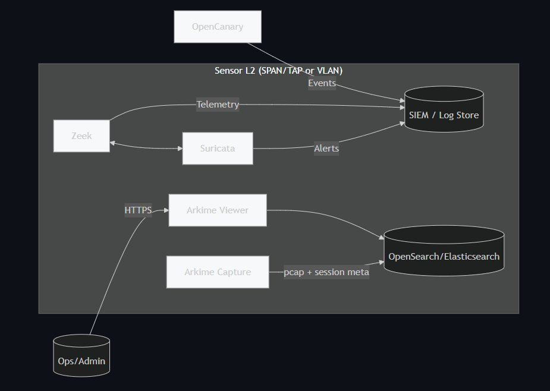

Sonde IDS conteneurisée
Présentation et origine du projet
Ce projet trouve son origine dans une problématique professionnelle : une réflexion était en cours autour du remplacement d'une solution de détection existante. J'ai mené une phase de R&D pour identifier des alternatives. Deux approches ont émergé : une solution entièrement open source basée sur Suricata, Zeek et Arkime déployés de manière conteneurisée, ou Security Onion, plus intégrée mais freemium. Security Onion s'est révélée plus adaptée à l'intégration rapide en entreprise, mais j'ai fait le choix, à titre personnel, de poursuivre le développement de l'approche open source. C'est de cette initiative individuelle qu'est né ce projet.
Objectifs et enjeux
Ces solutions (Suricata, Zeek, Arkime) sont puissantes mais leur déploiement est complexe : il faut définir l'architecture, lister les VLAN, configurer les interfaces réseau, ce qui peut être chronophage selon l'infrastructure. L'objectif était de standardiser et automatiser ce déploiement, en réduisant la complexité initiale tout en conservant la flexibilité des outils. J'ai également voulu intégrer une logique de validation en amont, pour limiter les erreurs de configuration et garantir un lancement fiable.
Un second objectif fort : s'inscrire dans une démarche entièrement open source, avec un projet facilement réutilisable, compréhensible et modifiable par n'importe qui.
Conception et approche technique
Le projet repose sur Docker. J'ai conçu une architecture modulaire dans laquelle chaque outil est encapsulé dans une image Docker dédiée. Cette approche permet de découpler les composants, de faciliter leur mise à jour et de rendre l'ensemble flexible selon les besoins. La conteneurisation joue ici un rôle central : elle transforme une infrastructure IDS complexe en une solution portable, rapide à déployer et facilement adaptable.
Réalisation
J'ai développé des images Docker pour chaque outil avec des paramètres préconfigurés et des placeholders pour les configurations nécessaires. Des exemples complets ont été fournis avec les IP les plus courantes en réseau local, couvrant des scénarios avec une ou plusieurs interfaces réseau. L'ensemble du projet est documenté en anglais, avec des fichiers de configuration commentés, pour garantir sa compréhension et sa réutilisation. Le projet est versionné et maintenu publiquement sur GitHub.
🔗 github.com/ninko0/Docker-IDS-Sensor

Architecture complète — Sensor L2, Zeek, Suricata, Arkime, OpenCanary, SIEM/Log Store
Résultats
Ce projet m'a permis de développer une solution fonctionnelle de déploiement de sondes IDS conteneurisées, de monter significativement en compétences sur Docker et la structuration d'architectures distribuées, et d'entrer concrètement dans le monde de l'open source, avec les responsabilités que cela implique : maintenance, versionnement, documentation.
Les suites du projet
Parmi les pistes envisagées : intégration de honeypots pour élargir les capacités de détection, amélioration de la robustesse et de la compatibilité avec les évolutions des stacks, et réflexion autour d'une migration vers Kubernetes pour une orchestration plus avancée. L'objectif reste de maintenir un projet propre, documenté et versionné, utilisable et améliorable par la communauté.
Regard critique
Ce projet représente une étape importante dans mon évolution, passer d'une logique d'utilisation d'outils à une logique de conception de solution, en prenant en compte des problématiques réelles de déploiement, de maintenabilité et d'expérience utilisateur. Il a aussi renforcé ma conviction que la documentation n'est pas optionnelle : un projet technique n'a de valeur que s'il peut être compris et réutilisé.